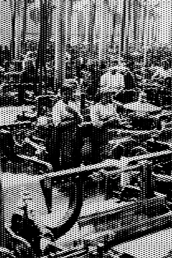
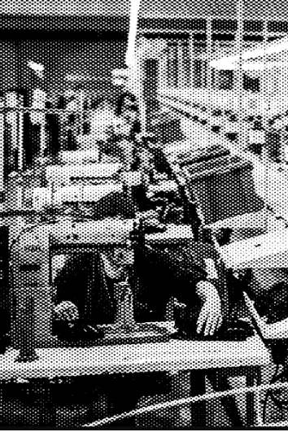
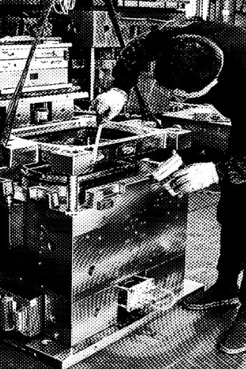
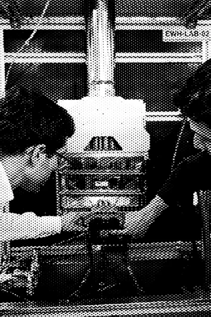
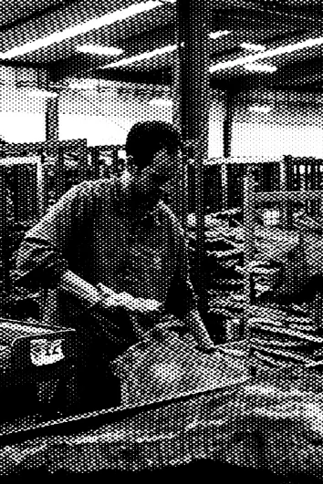
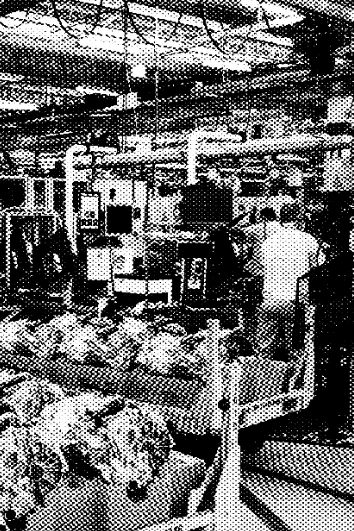

20%
das empresas da UE utilizavam IA em 2025.
Eurostat · 2025
mapear contexto
Ajudamos o tecido industrial a construir operações mais sólidas através de uma abordagem system-first à adoção de software, automação e IA. Ajudamos o tecido industrial a construir operações mais sólidas através de uma abordagem system-first à adoção de software, automação e IA.
As empresas mais avançadas não têm apenas melhores modelos. Têm melhores dados, maior
integração, processos mais claros e capacidade interna para transformar tecnologia em execução.
Enquanto a IA acelera, a diferença entre experimentar e operacionalizar continua a aumentar.
As empresas mais avançadas têm melhores dados, maior integração e processos mais claros. Enquanto a IA acelera, a diferença entre experimentar e operacionalizar continua a aumentar.
das empresas da UE utilizavam IA em 2025.
Eurostat · 2025Intensidade digital básica nas PME e grandes empresas.
Eurostat · 2025Análise interna de dados nas pequenas e grandes empresas.
Eurostat · 2025Na Vouga, system-first significa compreender o sistema
antes de introduzir software, automação ou IA.Compreender. Simplificar. Construir. Medir. Evoluir.

Ver o sistema tal como ele é.
Construir em volta do sistema.
Melhorar à medida que o sistema muda.

Cada projeto começa onde a empresa mais precisa de ajuda e evolui em camadas.

Tornamos a capacidade da fábrica visível e comercialmente apelativa.

Identificamos um processo interno que está a limitar a empresa e digitalizamo-lo.

Acrescentamos IA quando os dados e processos já permitem gerar valor.
Uma seleção de exemplos de aplicação que mostra como transformamos problemas operacionais em sistemas com impacto mensurável.
Centro Integrado de Operações Industriais
Ver trabalhoProduction & Energy Intelligence
Ver trabalhoSistema de Conhecimento Técnico
Ver trabalhoCommercial & Quotation System
Ver trabalhoSistema de Conhecimento Estratégico
Ver trabalhoAgente de Voz com Memória Contextual
Ver trabalhoNascidos entre os rios Douro e Vouga, crescemos rodeados de fábricas, produtores e empresas industriais que moldaram a região. Hoje, trabalhamos ao seu lado para modernizar operações através de pensamento sistémico, software e IA.
helping the next generation of industry grow on stronger foundations.






Exemplo de aplicação
Next step